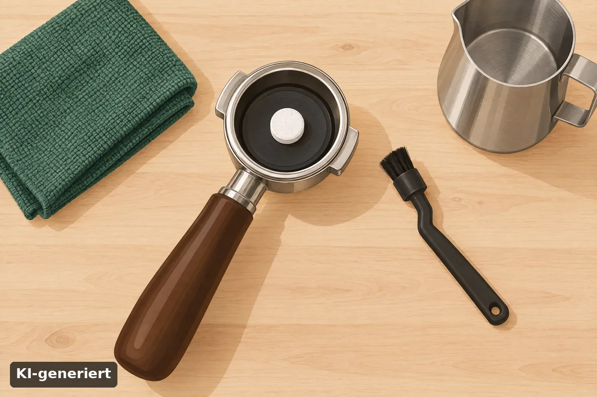
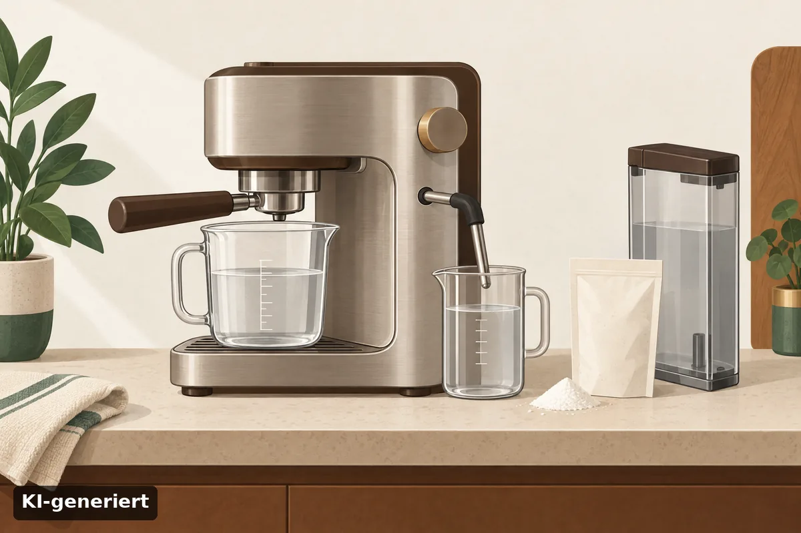

Die Bambino Plus zeigt selbst an, wann sie gereinigt oder entkalkt werden will. Hier stehen alle Schritte aus der Anleitung von Sage, Stand .
| Aufgabe | Wann | So zeigt es die Maschine |
|---|---|---|
| Siebe und Siebträger abspülen | nach jedem Gebrauch | keine Anzeige |
| Dampfdüse abwischen | nach jedem Aufschäumen | keine Anzeige |
| Reinigungszyklus | nach 200 Extraktionen | Tasten für eine und zwei Tassen blinken abwechselnd |
| Entkalken | alle 90 Tage bei Wasserhärte 4, alle 60 Tage bei Wasserhärte 6 | Tasten für eine Tasse, zwei Tassen und Dampf leuchten 15 Sekunden abwechselnd |
| Wasserfilter wechseln | nach 3 Monaten | keine Anzeige, Termin selbst merken |
Quelle: Anleitung der Sage Bambino Plus (BES500/SES500), deutsche Kurzanleitung. Wie du die Stufe deines Wassers bestimmst, steht auf der Seite Entkalken & Wasserhärte.
Nach 200 Extraktionen blinken die Tasten für eine und zwei Tassen abwechselnd. Dann reinigt die Maschine die Brühgruppe mit einer Reinigungstablette. Eine Dauer nennt Sage nicht.
Du brauchst: die mitgelieferte Reinigungsscheibe, eine Reinigungstablette für Espressomaschinen und einen Behälter für 2 Liter.
Du kannst die Reinigung auch früher starten. Schalte die Maschine aus, sodass alle Lichter aus sind. Halte dann statt Schritt 7 die Tasten für zwei Tassen und Dampf 5 Sekunden gedrückt.

Wird Entkalken fällig, leuchten die Tasten für eine Tasse, zwei Tassen und Dampf 15 Sekunden lang abwechselnd. Sage empfiehlt alle 90 Tage bei Wasserhärte 4 und alle 60 Tage bei Wasserhärte 6. Den nächsten Termin rechnet unser Wasserhärte-Rechner aus.
Du brauchst: Entkalkungsmittel und einen Behälter für 2 Liter. Die Menge des Mittels nennt Sage für die Bambino Plus nicht. Halte dich an die Angabe auf der Packung.
Vorsicht: Beim Entkalken kann heißer Dampf austreten. Nimm den Tank währenddessen nicht ab und lass ihn nicht ganz leer laufen.

Wisch die Dampfdüse nach jedem Aufschäumen sofort mit einem feuchten Tuch ab. Senkst du die Düse ab, reinigt die Maschine sie automatisch mit Dampf. Von Hand geht das so: Düse absenken und die Dampf-Taste 5 Sekunden gedrückt halten.
Ist die Düse verstopft, bricht die Maschine das Aufschäumen ab. Die Dampf-Taste geht aus, die Tasten für Milchtemperatur und Milchschaum blinken.
Sage empfiehlt, den Filter nach 3 Monaten zu tauschen. Bist du länger weg, leere den Tank und ersetze die Patrone.
Sage empfiehlt nur kaltes Leitungswasser. Von stark gefiltertem, entmineralisiertem oder destilliertem Wasser rät Sage ab, weil es den Geschmack und die Funktion der Maschine beeinträchtigen kann.
Kein Teil gehört in den Geschirrspüler. Nimm keine Scheuermittel, Topfreiniger oder kratzenden Tücher. Tauch Gerät, Kabel und Stecker nie in Wasser. Reinigungstabletten und anderes Zubehör findest du bei unserem Zubehör.
Sage empfiehlt alle 90 Tage bei Wasserhärte 4 und alle 60 Tage bei Wasserhärte 6. Die Maschine zeigt es an: Die Tasten für eine Tasse, zwei Tassen und Dampf leuchten 15 Sekunden lang abwechselnd.
Die Maschine hat 200 Extraktionen seit der letzten Reinigung gezählt. Starte den Reinigungszyklus mit Reinigungsscheibe und Reinigungstablette. Entkalker brauchst du dafür nicht.
Die Maschine hat eine verstopfte Dampfdüse erkannt und das Aufschäumen abgebrochen. Blas die Düse mit Dampf durch. Hilft das nicht, schraub den Aufsatz mit dem Reinigungstool ab und reinige die Löcher mit der Nadel.
Sage nennt für die Bambino Plus keine Dauer. Die Maschine läuft das Programm selbst durch und geht danach wieder in Bereitschaft.
Nein. Sage schreibt, dass keines der Teile und kein Zubehör in den Geschirrspüler darf. Spül Siebe, Siebträger und Abtropfschale von Hand.
Wie sich die Maschine im Alltag schlägt, steht im Erfahrungsbericht zur Sage Bambino Plus. Pflege-Anleitungen für weitere Maschinen findest du auf der Seite Entkalken & Wasserhärte.